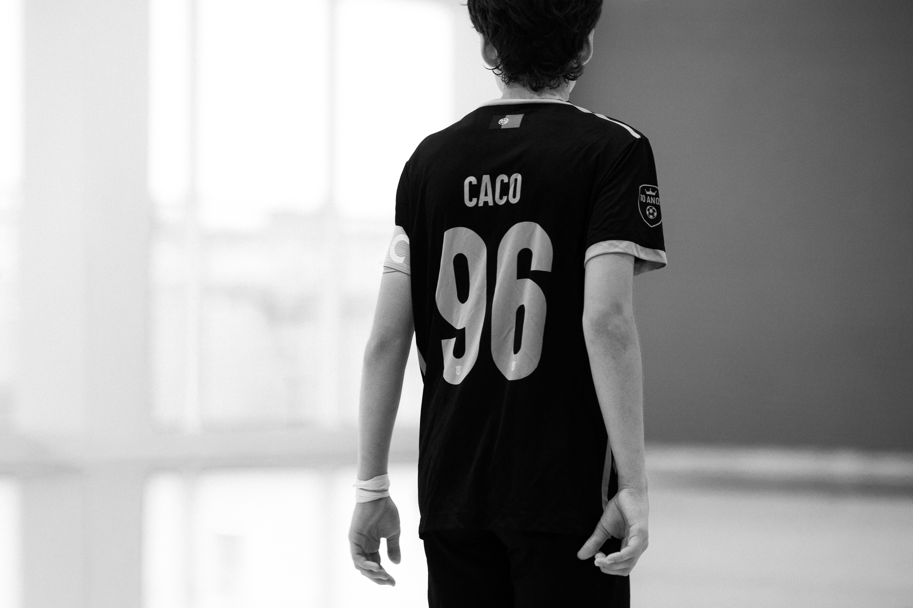

Photographer & Computer Engineer
Light.
Life.
Moments.
Vasco Pereira — capturing the world through a lens, one frame at a time. From nature to streets, from people to souls, exploring the beauty in the little moments.
Photographer & Computer Engineer
Vasco Pereira — capturing the world through a lens, one frame at a time. From nature to streets, from people to souls, exploring the beauty in the little moments.

About
Vasco Pereira is a computer engineer whose true passion lives behind the camera. Photography, for Vasco, isn't a job — it's a way of life. A pursuit of beauty in the everyday, the extraordinary, and everything in between.
"Each image an emotional storytelling."
Portfolio
A body of work that spans continents, emotions, cultures, street and moments.
"Every photograph is a certificate of presence."

Skógafoss · Black Sand Beach · Spirit Church

Analog street documentary

Live music & performance

Wedding ceremonies & celebrations

Lisbon · Alentejo · Azores

Couple's Wombs · Newborns · Generations

Movement & light experiments

Artistic composition & stills

Ice & fire

Mountains & light

The first dance

Genuine moments, pure emotion

Crowd & light
Philosophy
"Photography is not just a technique.
It's a way of seeing — and a reason to keep looking."
Every shutter click is a decision. Every frame, a commitment. Vasco believes in photography as a practice of presence — slowing down to notice what others miss.
Workshop
A full-day immersive photography workshop — indoors and outdoors — led by Vasco Pereira. Equal parts theory, street practice, and honest conversation about what makes an image matter.
We open with the hardest question in photography: what are you actually trying to say? Through Vasco's own images and references from masters like Cartier-Bresson and Saul Leiter, this session unpacks light, composition, and emotional intent — before a single shutter is pressed.
First time on the streets with one constraint: no zooming in post. Participants practice finding the frame before pressing the shutter — geometry, light, human presence.
Participants share their morning images informally over lunch. Vasco comments on the edit selection — not just the images, but the instinct behind what people chose to keep.
A hands-on session exploring how light shapes mood — from harsh midday sun to the softness of window light. Vasco's editing philosophy: minimal intervention, maximum honesty.
The afternoon light changes everything. This walk focuses on portraits and human connection — approaching strangers, building trust in seconds, capturing the unguarded moment.
Each participant presents their one image of the day — the one that surprised them most. Vasco gives individual written feedback for every participant to take home.
Contact
Available projects. Based in Portugal — open to travel worldwide.